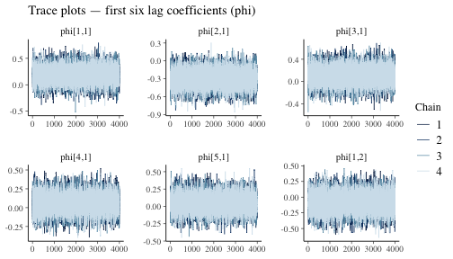
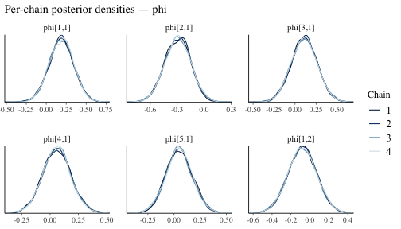
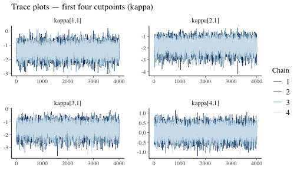

Introduction
bvarnet uses the No-U-Turn Sampler (NUTS), a variant of
Hamiltonian Monte Carlo (HMC), via CmdStan. Unlike simple
Metropolis-Hastings, NUTS adapts the step-size and trajectory length
automatically during a warmup phase, making it very efficient for the
high-dimensional, correlated posteriors typical of multilevel VAR
models. Even so, every MCMC analysis should pass a set of standard
diagnostic checks before results are interpreted.
This vignette covers:
- Fitting a model with sensible defaults
- Convergence diagnostics: R-hat and Effective Sample Size
- Trace plots for visual inspection
- Sampler-level warnings: divergences and exceeded tree depth
- Tuning the sampler via
iter,warmup,adapt_delta, andmax_treedepth
For a deeper treatment of HMC/NUTS theory and every diagnostic described here, see the Stan Reference Manual — MCMC Sampling and the community Stan Wiki.
Fitting a Reference Model
We reuse the five-variable ordinal model from
vignette("bvarnet"). The same studentlife data
are used throughout.
data(studentlife)
priors <- set_priors(
phi = prior(family = "normal", loc = 0, scale = 0.5),
kappa = prior(family = "normal", loc = 0, scale = 1)
)
fit <- bvar(
id_col = "id",
time_col = "day",
y_cols = c("anxious", "calm", "conventional", "critical", "dependable"),
K = 1,
data = studentlife,
family = "ordinal",
priors = priors,
iter = 4000,
warmup = 1000,
chains = 4,
cores = 4,
seed = 1337
)
print(fit)
#> BVAR Network fit
#> ========================================
#> Family: ordinal
#> Outcomes (p): 5
#> Lags (K): 1
#> Fixed eff.: 0
#> Observations: 147
#> Rhat max: 1.001
#> Divergences: 1 WARNING: check model/priors.
#> Priors:
#> beta ~ Normal(0, 1) (default)
#> phi ~ Normal(0, 0.5)
#> kappa ~ Normal(0, 1)
#> Total time: 13.0 sec
#> ========================================R-hat: Between-Chain Convergence
R-hat () measures whether independent chains have converged to the same distribution by comparing within-chain to between-chain variance. A value of indicates that all chains are exploring the same region of parameter space.
Rule of thumb: is the modern criterion. Values above 1.01 suggest the chains have not converged and longer sampling is needed.
The convergence table is stored in fit$convergence as a
data frame with one row per parameter, alongside bulk-ESS and
tail-ESS.
head(fit$convergence)
#> variable rhat ess_bulk ess_tail
#> 1 lp__ 1.0006264 5807.04 8763.894
#> 2 phi[1,1] 1.0002434 19633.01 11959.170
#> 3 phi[2,1] 0.9999424 16400.52 11459.448
#> 4 phi[3,1] 0.9999472 19919.94 12271.959
#> 5 phi[4,1] 1.0001548 29249.05 11530.322
#> 6 phi[5,1] 1.0000761 18623.57 12379.016A quick summary of the R-hat distribution across all parameters:
rhat_vals <- fit$convergence$rhat
summary(rhat_vals)
#> Min. 1st Qu. Median Mean 3rd Qu. Max.
#> 0.9999 1.0000 1.0001 1.0001 1.0002 1.0007Effective Sample Size (ESS)
Even though NUTS chains produce correlated samples, the
Effective Sample Size (ESS) measures how many
independent draws the correlated sequence is worth.
bvarnet stores two variants:
| Statistic | Targets | Minimum recommended |
|---|---|---|
ess_bulk |
Central tendency (mean, median) | |
ess_tail |
Tail quantiles, credible interval bounds |
ess_bulk <- fit$convergence$ess_bulk
ess_tail <- fit$convergence$ess_tail
cat("Bulk ESS — min:", round(min(ess_bulk, na.rm = TRUE)),
" median:", round(median(ess_bulk, na.rm = TRUE)), "\n")
#> Bulk ESS — min: 5807 median: 18210
cat("Tail ESS — min:", round(min(ess_tail, na.rm = TRUE)),
" median:", round(median(ess_tail, na.rm = TRUE)), "\n")
#> Tail ESS — min: 8764 median: 12304
cat("Parameters with bulk ESS < 400:", sum(ess_bulk < 400, na.rm = TRUE), "\n")
#> Parameters with bulk ESS < 400: 0Trace Plots
A trace plot shows the sampled value of a parameter at each iteration for every chain. Healthy chains look like a fuzzy caterpillar, they mix rapidly and all chains overlap. Trends, spikes, or chains that stay separated indicate sampling problems.
To investigate the trace plots, we can use the
mcmc_trace() from the bayesplot package.
phi_pars <- grep("^phi", dimnames(fit$draws)[[3]], value = TRUE)[1:6] # select some lag-coefficient parameters
mcmc_trace(fit$draws, pars = phi_pars) +
ggplot2::labs(title = "Trace plots — first six lag coefficients (phi)")
Complementary density overlay plots show whether chain-specific posteriors are consistent:
mcmc_dens_overlay(fit$draws, pars = phi_pars) +
ggplot2::labs(title = "Per-chain posterior densities — phi")
We can do this for any sampled parameter, for example the threshold parameter kappa:
kappa_pars <- grep("^kappa", dimnames(fit$draws)[[3]], value = TRUE)[1:4]
mcmc_trace(fit$draws, pars = kappa_pars) +
ggplot2::labs(title = "Trace plots — first four cutpoints (kappa)")
Sampler Diagnostics: Divergences and Exceeded Tree Depth
Stan’s NUTS sampler reports two additional per-chain diagnostics
stored in fit$diagnostics:
fit$diagnostics
#> num_divergent num_max_treedepth ebfmi
#> 1 0 0 0.8941142
#> 2 0 0 0.9862093
#> 3 0 0 0.9318894
#> 4 1 0 0.9390785Divergences
A divergence occurs when the numerical integrator of HMC deviates from the true Hamiltonian trajectory. Even a small number of divergences can indicate that the sampler is missing regions of the posterior, leading to biased estimates. They should not be ignored!
Common causes and remedies:
- Funnel-shaped posterior (common in hierarchical models)
-
Step size too large: increase
adapt_deltatowards 1 (see below). - Model misspecification: revisit the prior scale or model structure.
Exceeded Tree Depth
To draw each new sample, NUTS simulates a trajectory through
parameter space, taking small steps and deciding when to turn around.
The max_treedepth argument (default 10) sets a hard limit
on how long that trajectory can be. When this warning appears, it means
the sampler wanted to keep exploring but was cut off — it hit the limit
before it was ready to stop. Unlike divergences, this does
not mean the results are biased. It is a
slowness warning: the sampler is doing extra work to
produce each draw, so your effective sample size per hour of compute
time is lower than it could be. Increasing max_treedepth
gives the sampler more room to move, which typically resolves the
warning.
Tuning the Sampler
Chain Length: iter and warmup
bvar() exposes two length arguments:
| Argument | Default | Role |
|---|---|---|
warmup |
1000 | Iterations used for adaptation (step-size, mass matrix). Discarded from inference. |
iter |
4000 | Post-warmup (sampling) iterations per chain. Used for inference. |
The total number of draws available for inference is
iter × chains (16 000 with the defaults above). Increasing
iter directly improves ESS at a proportional computational
cost. Increasing warmup can help when the sampler struggles
to find the typical set (visible as a long burn-in in trace plots).
A practical rule: start with warmup = 1000, iter = 2000
for exploration, then increase to iter = 4000 (or more) for
final inference.
adapt_delta: Controlling Divergences
adapt_delta (default 0.80) is the target
acceptance rate that Stan’s dual-averaging algorithm uses when
adapting the step size during warmup. A higher target forces a smaller
step size, which reduces discretisation error and typically eliminates
divergences.
Trade-off: smaller step sizes mean shorter
trajectories per unit time, so ESS per second decreases. Increase
adapt_delta only when you observe divergences; do not set
it near 1 unless needed.
Typical values:
| Situation | adapt_delta |
|---|---|
| Default / no divergences | 0.80 (CmdStan default) |
| Some divergences | 0.90–0.95 |
| Persistent divergences in hierarchical models | 0.97–0.99 |
For full details see the Stan
reference on adapt_delta.
max_treedepth: Controlling Trajectory Length
max_treedepth (default 10) caps the doubling steps NUTS
may take. The maximum trajectory length is
leapfrog steps.
Increase this when fit$diagnostics shows a non-trivial
number of iterations hitting the tree-depth limit. Each additional level
doubles compute time per affected iteration, so increases of 1–2 beyond
the default are usually sufficient.
For full details see the Stan
reference on max_treedepth.
Quick Checklist
Before reporting results from a bvarnet model:
- R-hat: all parameters .
-
ESS:
ess_bulkandess_tailfor all parameters of interest. - Trace plots: caterpillar-like mixing, no trends or stuck chains.
-
Divergences: zero, or investigate with higher
adapt_delta. -
Tree-depth warnings: none, or increase
max_treedepth.